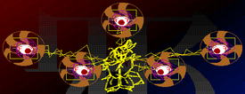

- Welcome to Touhou Wiki!
- Please register to edit. For assistance, check in with our Discord server or IRC channel.
YuugenMagan
| YuugenMagan Yuugen Magan, Yuugenmagan | |
|---|---|
|
 Sprite of YuugenMagan in Highly Responsive to Prayers EvilEyesMore Character Titles | |
| Species |
Demon (?) |
| Location |
Somewhere within Makai, possibly near its gate |
Music Themes | |
| |
Appearances | |
| Official Games | |
| |
YuugenMagan is the first being that Reimu Hakurei encounters in Makai during Highly Responsive to Prayers after passing through the gate to Makai. Like other bosses in the game, there is little to no information regarding this enemy.
Character Basis[edit]
Name[edit]
Like most characters in the Highly Responsive to Prayers, YuugenMagan doesn't have an official kanji spelling. Its name is written just rendered "YuugenMagan" in-game. Two possible spellings are "幽玄魔眼" and "幽幻魔眼". Magan (魔眼 lit. "magical/demon's eye") is roughly equivalent to "evil eye". "Yuugen" interpreted as 幽玄 means "simple and elegant/subtlely graceful/profoundly mysterious/mystic/etc". The word also refers to the occult, which is the most likely meaning in this case as YuugenMagan has five evil eyes surrounding it. ZUN used the kanji 幽玄 before on the theme title "Eternal Dream ~ Mystical Maple (幽玄の槭樹). Using this interpretation, "YuugenMagan" would translate to "Occult Evil/Demon Eyes" or "Mystic Evil/Demon Eyes".
幽幻 is not a legitimately established term in Japanese, so, if interpreted as this, it's likely to come from Yuugen Doushi (幽幻道士) (original title 殭屍小子): an action horror comedy movie made in Taiwan starring a Jiang Shi as the heroine. Again, an example of ZUN using this word before exists in the form of the theme title "Eastern Record of the Sealing of a Demon ~ A Phantom's Boisterous Dance" (東方封魔録 ～ 幽幻乱舞). Using this interpretation, "YuugenMagan" would translate to "Phantom Evil/Demon Eyes".
Origin[edit]
The evil eye is a widespread concept among many cultures with the common focal point being that a malevolent stare or look can act as a curse. In Japanese, the most common term for evil eye is 邪視 (jashi). The Judaic angel of death, Sariel, is associated with evil eyes and is said to be able to ward them off. Due to the appearance of Sariel in the game and Makai itself containing numerous references to Abrahamic imagery, YuugenMagan is most likely based off of the Jewish concept of evil eyes.
Design[edit]
YuuganMagan is a hovering set of five independently-moving eyes, connected by an electric-like force and surrounded by strange markings. At the center lies what appears to be an outline or projection of a character in a kimono. This being seems to be the source or controller of the eyes.
Relationships[edit]
- Shinki
Shinki is the creator of Makai and everything within it. In light of this, Shinki may also have created YuugenMagan.
- Sariel (possibly)
Due to the mythological Sariel's association with evil eyes, YuugenMagan might be an underling or servant of Sariel.
Additional Information[edit]
- YuugenMagan is boss with the most hit boxes in the series that all affect the same health bar. Coming in second place would be the Prismriver Sisters in Perfect Cherry Blossom.
- YuugenMagan and Mima share the same theme in Highly Responsive to Prayers, "Angel's Legend".
- The kanji "邪", meaning "wicked/evil", appears in the background during YuugenMagan's battle.
- Byakuren Hijiri's lotus aura seems to be a reference to YuugenMagan's evil eyes. The two share a similar presentation and shoot similar danmaku patterns. This, of course, makes sense as Byakuren, like YuugenMagan, appears in Makai.
- YuugenMagan's eyes appear to come out of purple magic circles that each contain a Star of David within them.
- YuugenMagan's final attack phase involves the evil eyes summoning a pentacle that shoots danmaku and, eventually, itself.
- The pentacle (or pentagram) could represent many things including magic, the occult, and the seiman symbol of Onmyoudou. The Chinese concept of Wu Xing (五行 lit. "Five Elements") is usually represented in a diagram connected by a pentacle. During YuugenMagan's fight, the background displaying the 邪 (evil) kanji constantly changes color. All of the colors on the background can correspond to Wu Xing elements. Black and blue to water, indigo to metal, red and orange to fire, purple and yellow to earth, and green to wood.
- Pentacles used for magic often feature magic squares in their pentagonal center. Mystic Square, a game that heavily features Makai, is named after the magic square. Sara, the gatekeeper of Makai in Mystic Square, directly references the concept in her theme's title, "Magic Square".
- The pentacle (or pentagram) could represent many things including magic, the occult, and the seiman symbol of Onmyoudou. The Chinese concept of Wu Xing (五行 lit. "Five Elements") is usually represented in a diagram connected by a pentacle. During YuugenMagan's fight, the background displaying the 邪 (evil) kanji constantly changes color. All of the colors on the background can correspond to Wu Xing elements. Black and blue to water, indigo to metal, red and orange to fire, purple and yellow to earth, and green to wood.
- In Story of Eastern Wonderland, enemy evil eyes make their debut along with a giant, artifical evil eye tank known as Evil Eye Σ created by the engineer Rika.
Fandom[edit]
Official Sources[edit]
- 1997/08/15 Highly Responsive to Prayers
| This page is part of Project Characters, a Touhou Wiki project that aims to write proper descriptions for all official characters of Touhou Project. Please keep the character page guidelines in mind when contributing. |